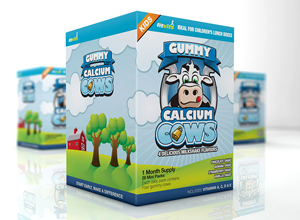

<!DOCTYPE html><html></html><head><meta charset="UTF-8"><title>Заголовок</title><meta name="description" content=""><link rel="shortcut icon" href="img/favicon/favicon.ico" type="image/x-icon"><link rel="apple-touch-icon" href="img/favicon/apple-touch-icon.png"><link rel="apple-touch-icon" sizes="72x72" href="img/favicon/apple-touch-icon-72x72.png"><link rel="apple-touch-icon" sizes="114x114" href="img/favicon/apple-touch-icon-114x114.png"><meta http-equiv="X-UA-Compatible" content="IE=edge"><meta name="viewport" content="width=device-width, initial-scale=1, maximum-scale=1"><link rel="stylesheet" href="libs/bootstrap/css/bootstrap.min.css"><!--link(rel="stylesheet", href="libs/animate/animate.css")--><link rel="stylesheet" href="css/main.min.css"><script src="libs/modernizr/modernizr.js"></script></head><body><div class="my-container"><header><div class="top"><a href="../../index.html"><div class="cart"> <span>4</span><p>items in cart</p></div><a href="../../index.html" class="login">Login</a><a href="../../index.html" class="register">Register</a></a></div><div class="middle">	<div class="logo"><a href="../../index.html">Kinetico</a></div><ul><li><a href="../../index.html">Home</a></li><li><a href="../../index.html">About</a></li><li><a href="../../index.html">Blog</a></li><li><a href="../../index.html">Shop</a></li><li><a href="../../index.html">Contact</a></li></ul></div><div class="bottom"> <p class="small">Writing about awesomness</p><p class="big">Blog</p></div></header><div class="content"> <div class="articles"><article><div class="inner"> <div class="header"> <div class="date"> <p class="month">dec </p><p class="number">12</p></div><a href="../../index.html" class="title">Designing interfaces for the social web</a><div class="discription"> <p>Written by <a href="../../index.html" class="autor">JohnPixle</a>, in Category <a href="../../index.html" class="cat-href">Technology</a></p></div></div><div class="text"> <p>Designing for the new web standards can be an interesting proccess. With so many viewports and device specs, designing soon becomes a neverending process. Designing for the new web standards can be an interesting proccess. With so many viewports and device specs, designing soon becomes a neverending process. Designing for the new web standards can be an interesting proccess. With so many viewports and device specs<a href="../../index.html" class="read-more">Read More</a></p></div></div></article><article><div class="inner"> <div class="header"> <div class="date"> <p class="month">dec </p><p class="number">12</p></div><a href="../../index.html" class="title">Designing interfaces for the social web</a><div class="discription"> <p>Written by <a href="../../index.html" class="autor">JohnPixle</a>, in Category <a href="../../index.html" class="cat-href">Technology</a></p></div></div><div class="text"> <p>Designing for the new web standards can be an interesting proccess. With so many viewports and device specs, designing soon becomes a neverending process. Designing for the new web standards can be an interesting proccess. With so many viewports and device specs, designing soon becomes a neverending process. Designing for the new web standards can be an interesting proccess. With so many viewports and device specs<a href="../../index.html" class="read-more">Read More</a></p></div></div></article><article><div class="inner"> <div class="header"> <div class="date"> <p class="month">dec </p><p class="number">12</p></div><a href="../../index.html" class="title">Designing interfaces for the social web</a><div class="discription"> <p>Written by <a href="../../index.html" class="autor">JohnPixle</a>, in Category <a href="../../index.html" class="cat-href">Technology</a></p></div></div><div class="text"> <p>Designing for the new web standards can be an interesting proccess. With so many viewports and device specs, designing soon becomes a neverending process. Designing for the new web standards can be an interesting proccess. With so many viewports and device specs, designing soon becomes a neverending process. Designing for the new web standards can be an interesting proccess. With so many viewports and device specs<a href="../../index.html" class="read-more">Read More</a></p></div></div></article><article><div class="inner"> <div class="header"> <div class="date"> <p class="month">dec </p><p class="number">12</p></div><a href="../../index.html" class="title">Designing interfaces for the social web</a><div class="discription"> <p>Written by <a href="../../index.html" class="autor">JohnPixle</a>, in Category <a href="../../index.html" class="cat-href">Technology</a></p></div></div><div class="text"> <p>Designing for the new web standards can be an interesting proccess. With so many viewports and device specs, designing soon becomes a neverending process. Designing for the new web standards can be an interesting proccess. With so many viewports and device specs, designing soon becomes a neverending process. Designing for the new web standards can be an interesting proccess. With so many viewports and device specs<a href="../../index.html" class="read-more">Read More</a></p></div></div></article><div class="pages"><a href="../../index.html" class="several">1</a><a href="../../index.html" class="several">2</a><a href="../../index.html" class="several">3</a><a href="../../index.html" class="several">4</a><a href="../../index.html" class="several">5</a><a href="../../index.html" class="arrow"><div class="pic right"></div></a><a href="../../index.html" class="arrow"><div class="pic left"></div></a></div></div><div class="side-menu"><div class="get-connected separator"><p class="orange">Get connected</p><a href="../../index.html" class="pic forrst"></a><a href="../../index.html" class="pic dribbble"></a><a href="../../index.html" class="pic twitter"></a><a href="../../index.html" class="pic facebook"></a><a href="../../index.html" class="pic pinterest"></a><a href="../../index.html" class="pic rss"></a></div><div class="search separator"><p class="orange">Search</p><input type="text" placeholder="Enter keyword &amp; hit enter"><input type="button"></div><div class="latest separator"><p class="orange">Latest comments</p><div class="comment"><a href="../../index.html" class="avatar"></a><a href="../../index.html" class="header">JohPixle</a><span>2 hours ago</span><p>The Mouse did not notice this question, but hurriedly went on. it continued, turning to Alice as it spoke.</p></div><div class="comment"><a href="../../index.html" class="avatar"></a><a href="../../index.html" class="header">JohPixle</a><span>2 hours ago</span><p>The Mouse did not notice this question, but hurriedly went on. it continued, turning to Alice as it spoke.</p></div><div class="comment"><a href="../../index.html" class="avatar"></a><a href="../../index.html" class="header">JohPixle</a><span>2 hours ago</span><p>The Mouse did not notice this question, but hurriedly went on. it continued, turning to Alice as it spoke.</p><div id="yaya"></div></div></div><div class="popular"><p class="orange">Popular Product</p><div id="my_carousel" data-ride="carousel" class="carousel slide carousel-fade"><ol class="carousel-indicators"><li data-target="#my_carousel" data-slide-to="0" class="active"></li><li data-target="#my_carousel" data-slide-to="1"></li><li data-target="#my_carousel" data-slide-to="2"></li></ol><div role="listbox" class="carousel-inner"><div class="item active"><div class="box"><p class="header">Square box mockup pack</p><p class="products">10 product mockups</p><p class="price">$35,99</p><input type="button" value="Add to cart" class="button"></div></div><div class="item"><div class="box"><p class="header">Square box mockup pack</p><p class="products">10 product mockups</p><p class="price">$35,99</p><input type="button" value="Add to cart" class="button"></div></div><div class="item"><div class="box"><p class="header">Square box mockup pack</p><p class="products">10 product mockups</p><p class="price">$35,99</p><input type="button" value="Add to cart" class="button"></div></div></div></div></div></div></div><footer> <div class="row"><div class="col-xs-3"><div class="wrapper1"><p class="logo2">Kinetico</p><p class="discription">Kinetico is a simple and elegant commerce theme. Easy to customize, responsive friendly, with a digital  product orientation.</p></div></div><div class="col-xs-3"><div class="wrapper2"><p class="header">Tags</p><div class="row"> <div class="col-xs-6"><ul><li><a href="../../index.html">Technology</a><span>43</span></li><li><a href="../../index.html">Digital Paintings</a><span>54</span></li><li><a href="../../index.html">Photoshop</a><span>27</span></li><li><a href="../../index.html">App design</a><span>12</span></li></ul></div><div class="col-xs-6"><ul><li><a href="../../index.html">Web</a><span>123</span></li><li><a href="../../index.html">Abstract</a><span>4</span></li><li><a href="../../index.html">Themes</a><span>2</span></li><li><a href="../../index.html">Freebies</a><span>87</span></li></ul></div></div></div></div><div class="col-xs-3"><div class="wrapper3"><p class="header">Flickr Photostream</p><div class="row"> <div class="col-xs-4"></div><div class="col-xs-4"></div><div class="col-xs-4"></div></div><div class="row"><div class="col-xs-4"></div><div class="col-xs-4"></div><div class="col-xs-4"></div></div></div></div><div class="col-xs-3"><div class="wrapper4"><p class="header">Latest Tweets</p><div class="tweet"><p class="text"><a href="../../index.html">@John Pixle&nbsp</a>Hey what about trying our new set of icons? they are great for the retina display!<a href="../../index.html">&nbsphttp://shja.dhs</a></p><p class="time">&nbsp23 mins ago</p></div><div class="tweet"><p class="text"><a href="../../index.html">@ThemeForest&nbsp</a>Ok, I think it works now. Thanks.<p class="time">&nbsp23 mins ago</p></p></div></div></div></div></footer><p class="copyright">Copyright 2016&nbsp&nbsp<span>-&nbsp&nbspKinetico</span></p></div><div class="loader"><div class="loader_inner"></div></div><!- -[if lt IE 9]><script src="libs/html5shiv/es5-shim.min.js"></script><script src="libs/html5shiv/html5shiv.min.js"></script><script src="libs/html5shiv/html5shiv-printshiv.min.js"></script><script src="libs/respond/respond.min.js"></script><![endif]--><script src="libs/jquery/jquery-1.11.2.min.js"></script><script src="libs/bootstrap/js/bootstrap.min.js"></script><!--script(src="libs/waypoints/waypoints.min.js")--><!--script(src="libs/animate/animate-css.js")--><!--script(src="libs/plugins-scroll/plugins-scroll.js")--><script src="js/common.min.js"></script></body>